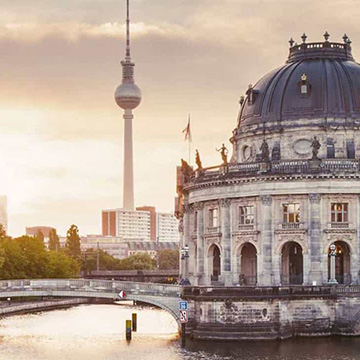
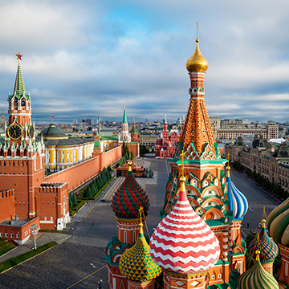
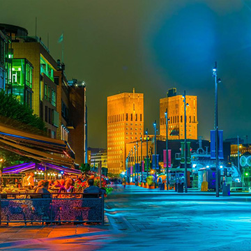
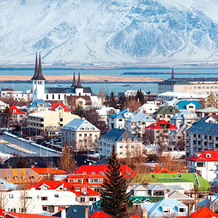
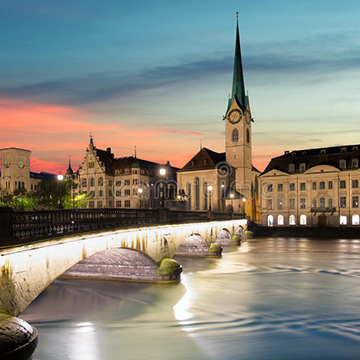

|  |
Berlín, Alemania. Berlín, capital alemana, data del siglo XIII. Los elementos que recuerdan la turbulenta historia de la ciudad en el siglo XX incluyen el… |
 |
Bratislava, Eslovaquia. Bratislava es la capital de Eslovaquia y se ubica a lo largo del río Danubio, cerca de la frontera con Austria y Hungría... |
 |
Copenhague, Dinamarca. Copenhague, capital de Dinamarca, se ubica en las islas litorales de Selandia y Amager. Se conecta con Malmo en el sur de Suecia… |
 |
Estocolmo, Suecia. Estocolmo, la capital de Suecia, abarca 14 islas y más de 50 puentes en un extenso archipiélago del mar Báltico. Las calles de… |
 |
Helsinki, Finlandia. Finlandia es un país de Europa del Norte que limita con Suecia, Noruega y Rusia. Su capital, Helsinki, ocupa una península y las… |
 |
Kiev, Ucrania. Kiev es la capital de Ucrania, dividida por el río Dniéper y conocida por su arquitectura religiosa, los monumentos seculares y los museos… |
|  |
Moscú, Rusia. Moscú se ubica en el río Moscova en Rusia occidental y es la capital cosmopolita de la nación. En su centro histórico, está… |
 |
Oslo, Noruega. Oslo, la capital de Noruega, se ubica en la costa sur del país en la cabecera del Fiordo de Oslo. Es famosa por… |
|  |
Reikiavik, Islandia. Reikiavik, en la costa de Islandia, es la capital del país y su ciudad más grande. Cuenta con el Museo Nacional y el… |
 |
Zurich, Suiza. La ciudad de Zúrich, un centro bancario y financiero global, se encuentra al norte del lago de Zúrich en el norte de Suiza… |